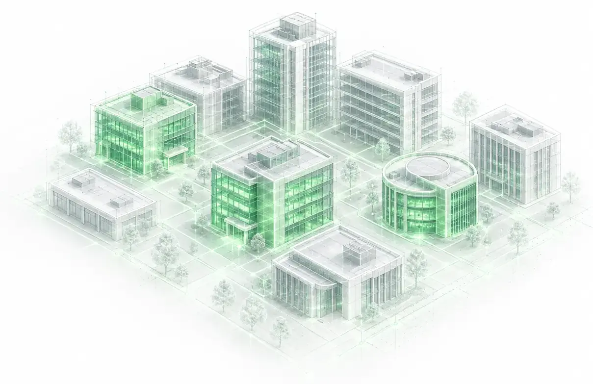

About Rede
We’ve been doing this since 2008.
Small by design, embedded by practice, and genuinely committed to the organisations we work with.

Who we are
Founded for communities that needed the work done well.
Rede was founded to serve Indigenous, Northern, and rural communities across Western Canada — places where resources were tight and no one else was doing the work. That origin shaped everything about how we operate: the relationships we build, the data we rely on, the long-term view we take.
We’ve grown since then, and the organisations we work with have grown with us. But the approach hasn’t changed. We’re still a small, nimble firm. We still show up for the long term. We still believe that the people operating the buildings are essential to any energy management program worth running.
More than engineers
We’re engineers, but that’s not all we are.
We’re project managers, data analysts, and long-term partners who work alongside your team rather than delivering a report and moving on.
That distinction matters, especially for organisations that have been let down by firms that did exactly that.
- Engineers
- Data analysts
- Project managers
- Long-term partners
The Rede team
Meet the team.
Rede is a small team of engineers and energy efficiency professionals. We specialise in institutional facilities and complex building environments, and we care about the organisations and communities we work with.
-

Matthew Redekopp, P.Eng., CEM
Owner and Mechanical Engineer
-

Marco Bieri, P.Eng., M.Eng, MSc, CEM
Senior Energy Efficiency Engineer
-

Erica Letchford, BID, LEED AP
Director of Operations
-

Enrique Contreras, SD MSc (Cand.)
Certified Sustainability & Cleantech Specialist


What makes the difference
Why Rede
-
01
Your data, your buildings, your plan
We don’t apply a generic program and hope it fits. Every engagement starts with what’s actually happening in your portfolio.
-
02
Embedded for the long term
Energy management requires sustained attention, and that means a partner who stays engaged. We work alongside your team, at whatever cadence makes sense, for as long as the relationship is useful.
-
03
Data first, always
Every recommendation we make is grounded in building performance data. If we can’t measure it, we won’t claim it.